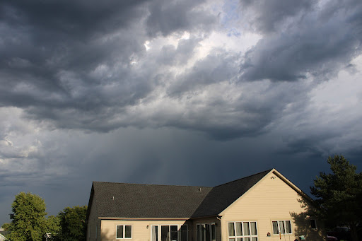
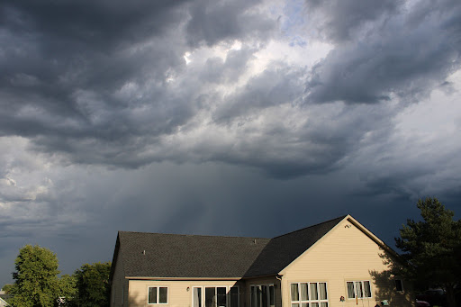

I am taking this class for my programming certification. I am also taking it because I want to be able to create my own website. I also have an interest in programming.
 

Last year I bought a Canon T7 Camera. I like spending time outside and taking pictures of nature and animals. I have been experimenting with the different settings on the camera in order to be better at taking photos in a variety of light levels.
I have 12 pets. One is a dog. The other 11 are parakeets.